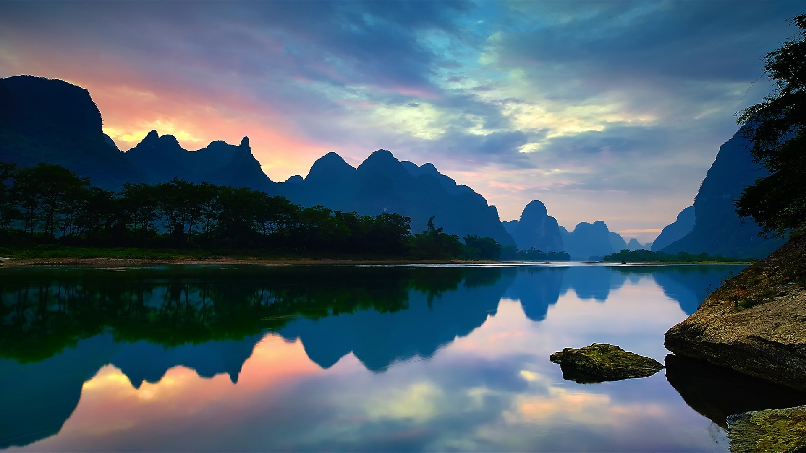

我们生长在这广袤的国土上，巍峨的长城记载着中华民族五千年不朽的历史；生命之脉长江黄河流淌着神州儿女心中沸腾的热血。在泰山之巅，在大漠边陲，每一个华夏子孙都为年轻的共和国鼓掌，为腾飞喝彩。美好未来就展现在世人的眼前，我们感到无比欣慰。
中国24小时·锦绣河山
北京故宫
北京故宫是中国明、清两代24个皇帝的皇宫，也是了解中国古代建筑和历史文化的最佳去处。在这里了解中国悠久的文化传统，同时作为世界现存最大、最完整的古建筑群，它的平面布局，立体效果，以及形式上的雄伟，都可以说是上古罕见的，也因此被联合国科教文组织列为“世界文化遗产”。
北京故宫是中国明、清两代24个皇帝的皇宫，也是了解中国古代建筑和历史文化的最佳去处。在这里了解中国悠久的文化传统，同时作为世界现存最大、最完整的古建筑群，它的平面布局，立体效果，以及形式上的雄伟，都可以说是上古罕见的，也因此被联合国科教文组织列为“世界文化遗产”。

北京长城
长城位于中国北部，东起山海关，西到嘉峪关，全长约6,700公里，通称万里长城。
长城是人类文明史上最伟大的建筑工程，它始建于2000多年前的春秋战国时期，秦朝统一中国之后联成万里长城。汉、明两代又曾大规模修筑。其工程之浩繁，气势之雄伟，堪称世界奇迹。
长城位于中国北部，东起山海关，西到嘉峪关，全长约6,700公里，通称万里长城。
长城是人类文明史上最伟大的建筑工程，它始建于2000多年前的春秋战国时期，秦朝统一中国之后联成万里长城。汉、明两代又曾大规模修筑。其工程之浩繁，气势之雄伟，堪称世界奇迹。
西藏布达拉宫
布达拉宮是西藏最重要的象征，更是藏民的朝圣地。布达拉宫被认为是藏族古建筑艺术的精粹，之所以有红宮和白宮，是因为两者在顏色上有特殊的意义。红色代表统治三界，白色代表寂靜，黃色则寓意长寿无疆。布达拉宮內收藏有许多历史文物，如经文典籍、塑像、唐卡，但当中最令人震撼的是五世以來各达赖的八座灵塔，塔身以黃金包裹，镶嵌著珠玉玛瑙，非常华丽。
布达拉宮是西藏最重要的象征，更是藏民的朝圣地。布达拉宫被认为是藏族古建筑艺术的精粹，之所以有红宮和白宮，是因为两者在顏色上有特殊的意义。红色代表统治三界，白色代表寂靜，黃色则寓意长寿无疆。布达拉宮內收藏有许多历史文物，如经文典籍、塑像、唐卡，但当中最令人震撼的是五世以來各达赖的八座灵塔，塔身以黃金包裹，镶嵌著珠玉玛瑙，非常华丽。


四川九寨沟
九寨沟是世界自然遗产，是中国第一个以保护自然风景为主要目的的自然保护区。位于四川省阿坝藏族羌族自治州九寨沟县境内，地处青藏高原、川西高原、山地向四川盆地过渡地带。
森林覆盖率超过80%，有74种国家保护珍稀植物，有18种国家保护动物，还有丰富的古生物化石、古冰川地貌。被世人誉为“水景之王”。
九寨沟是世界自然遗产，是中国第一个以保护自然风景为主要目的的自然保护区。位于四川省阿坝藏族羌族自治州九寨沟县境内，地处青藏高原、川西高原、山地向四川盆地过渡地带。
森林覆盖率超过80%，有74种国家保护珍稀植物，有18种国家保护动物，还有丰富的古生物化石、古冰川地貌。被世人誉为“水景之王”。
广西阳朔
阳朔县，隶属于广西壮族自治区桂林市。位于广西东北部，桂林市区南面，有汉族、壮族、瑶族、回族等11个民族。阳朔百里山川，处处奇山秀水，自然景观与人文景观交相辉映，被誉为“中国旅游名县”。
“桂林山水甲天下，阳朔山水甲桂林”，高度概括了阳朔的自然风光在世界上所占有的重要位置。“山青、水秀、峰奇、洞巧”，为天下四绝。
阳朔县，隶属于广西壮族自治区桂林市。位于广西东北部，桂林市区南面，有汉族、壮族、瑶族、回族等11个民族。阳朔百里山川，处处奇山秀水，自然景观与人文景观交相辉映，被誉为“中国旅游名县”。
“桂林山水甲天下，阳朔山水甲桂林”，高度概括了阳朔的自然风光在世界上所占有的重要位置。“山青、水秀、峰奇、洞巧”，为天下四绝。


新疆喀拉库勒湖
喀拉库勒湖是高原湖泊，它与布伦库勒湖同处阿克陶县帕米尔高原上，布伦口乡的慕士塔格、公格尔冰峰脚下，两者相距直线仅十来公里，然而两湖的景色却大相径庭。
喀拉库勒湖距阿图什220公里，海拔3600百米，面积为10平方公里，水深30多米，因湖水深邃幽黯，故名“喀拉库勒”（柯尔克孜语意为黑湖）。喀拉库勒湖草盛鸟多，景色优美。
喀拉库勒湖是高原湖泊，它与布伦库勒湖同处阿克陶县帕米尔高原上，布伦口乡的慕士塔格、公格尔冰峰脚下，两者相距直线仅十来公里，然而两湖的景色却大相径庭。
喀拉库勒湖距阿图什220公里，海拔3600百米，面积为10平方公里，水深30多米，因湖水深邃幽黯，故名“喀拉库勒”（柯尔克孜语意为黑湖）。喀拉库勒湖草盛鸟多，景色优美。